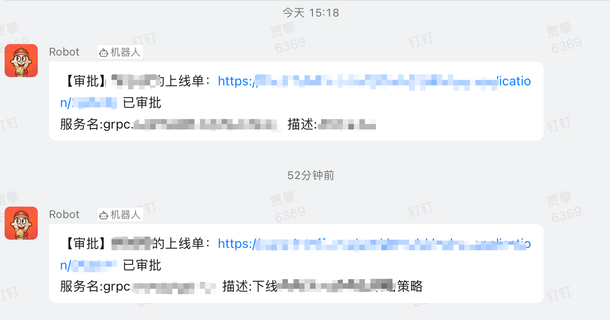
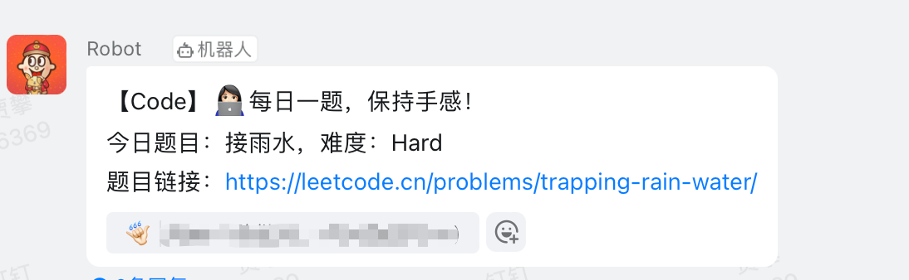
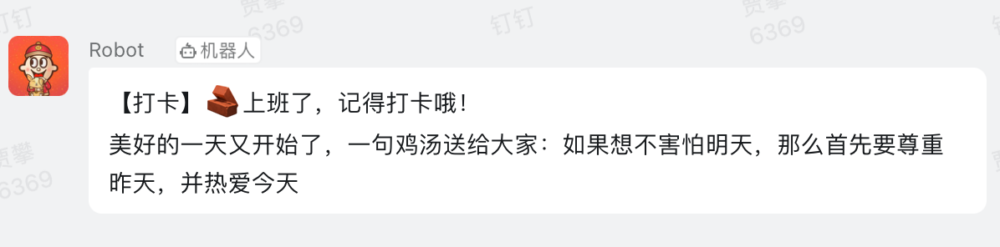
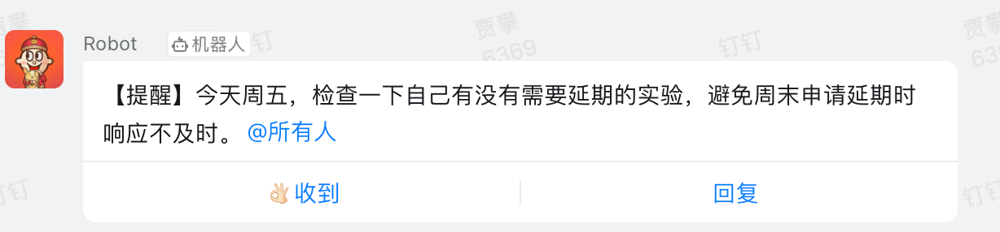
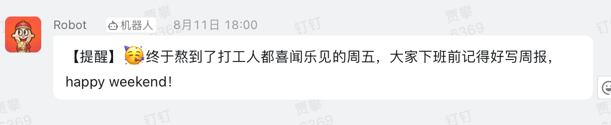

作为程序员，我们最擅长的事情就是用程序解决问题，恨不得天天拿着锤子找钉子。
我们公司的服务上线流程是先由服务负责人审批，然后再由团队的 Leader 审批。如果自己就是服务负责人，则只需经过团队的 Leader 审批即可。因此，我们大部分服务负责人设置的是最经常改动上线的那个人。
所以无论如何设置，最终都需要我来审批。每天平均要审批30多个上线单，不论是在医院看病、开车、吃饭、开会，随时都可能有审批。而且基本上都会伴随着一个「钉」，在公司里还好一些，一请假可就要了命了。上一次请假，下午四点之前我没有什么特别重要的事情，四点后准开车出去办点事，但是好巧不巧，四点之后开始不断有上线审批，换着人轮番上线。我一手握着方向盘，另一只手拿着手机审批，幸好我的车是自动挡，否则手动挡的话我真就忙不过来了。那个时候我真的有点火大，决定一定要写一个工具来自动帮我审批。
第二天上班后，我就让旁边的同事提了个上线单。在审批这个上线单的整个流程中，我进行了抓包，以查看每个步骤的请求内容。最后，我梳理了整个流程发现：将5个接口请求配合起来，就可以实现自动化审批，具体细节这里不展开。
这里不得不再吹一次 Python，从写第一行代码到完成，不到4个小时就实现了完整的功能。
要实现这个自动审批功能，还需要解决两个问题：
- 接口鉴权
- 消息通知
接口鉴权
我们公司的开发平台支持两种认证方式。在内网环境下，可以通过域账户登录；在非内网环境下，可以使用钉钉登录。无论使用哪种方式，最终都是设置后端所需的 Cookies。两种方式本质上并没有太大区别。
我需要一个稳定的机器来循环执行审批脚本，所以我将这个脚本放在了我的服务器上。为了快速验证第一版程序中的 Cookies 是否有效，我将 Cookies 写死在了代码内，并测试了它们的过期时间。经过验证，Cookies 的过期时间为12小时。因此，每天早上更新一次 Cookies 即可。
更新 Cookies 需要手动操作。因为登录界面和登录接口有许多校验和加密逻辑，无法通过简单的模拟来完成。每天早上手动登录一次，然后提取 Cookies 即可。这比以前已经方便了许多。
更新 Cookies
接下来需要解决每天如何方便更新Cookies的问题。一开始想到的解决方案是自己编写一个API，每天调用该API来更新Cookies。评估后觉得该方案有些太重，而且没有界面的话就不能随时随地更新，只能通过Postman或者Curl命令，不太友好。最后，我采用了一个非常方便的方式。这个方法有界面，足够安全，可用性有保障。
这个方法会在之后单独用一篇文章来介绍，写完后在这里补充链接（我以后在程序内读取需要更新数据类的需求，大概率都会使用这个方法，敬请期待）。
消息通知
既然已经实现了自动审批逻辑，就一定要做好监控和通知，不能盲目审批，否则后果不堪设想。
最初我使用的是 Bark，每次审批后会向我的手机发送一条 Push，但这样不容易查看历史消息，也不方便聚合消息。另外，我认为这些通知并不一定只有我自己可以看到，可以让更多的人看到，比如全组的同学，这样好处是大家的信息更加同步。例如，之前有一个人上线服务时，除了他自己和 Leader，其他人是不知道的。因此，第二版的通知实现是与钉钉机器人对接。为了不干扰正常的组内聊天，我专门建了一个机器人通知群，把涉及到的组内同事拉进来。

我还在通知信息中加上了上线人在上线单中填写的描述，能非常方便的看出哪个服务、上了什么功能。
顺便做些其他通知
既然有了这个通知群，那可以再利用它做些其他通知。比如
订餐通知：
每天随机出一道算法题：

上下班打卡+毒鸡汤：
这里说明一下，我们打卡基本不要求时间，只是为了方便统计考勤

每周五实验延期提醒和周报提醒：


再举两个自动化的例子：
- 我写了个脚本，当发现我的博客收到评论后，会自动给我手机发一条 push
- 我的博客是纯静态页，没有管理后台，之前只能用我的一台配好环境的电脑来发布，现在改成了任何电脑都可以发布（这个后边找时间专门写一篇文章来介绍）
最后
为什么我这么看重审批，进而想要将其自动化。
首先，我觉得它是一项重复性的工作，确实没有必要每一次都进行人工操作。每次操作对我来说都是一次打扰。
其次，更重要的是，我不想因为上线审批不及时而成为团队效率的瓶颈。我一直提倡高效、不加班的工作方式，但是如果一个审批需要十多分钟，就有些大家的浪费时间了。